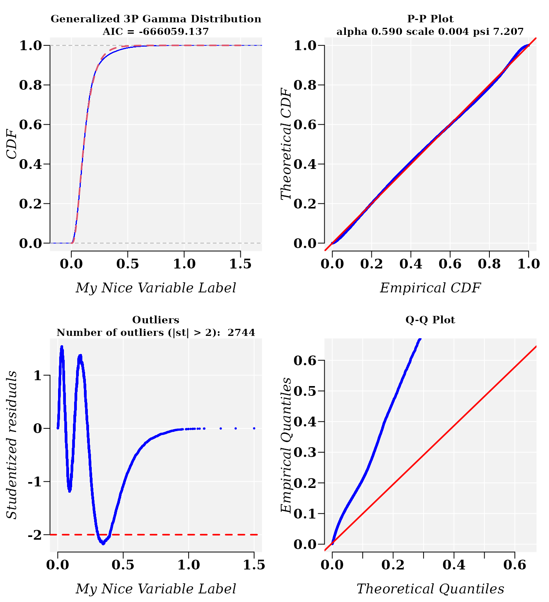
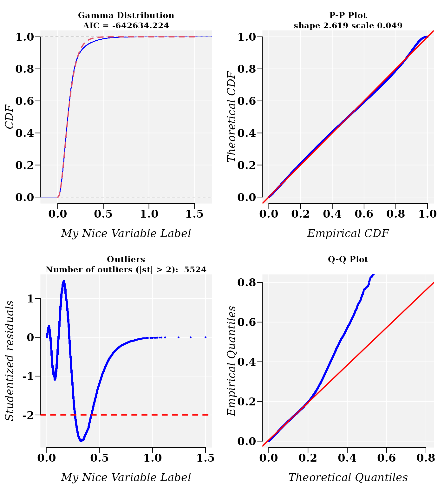

vignettes/Nonlinear_Fit_of_Mixture_Distributions.Rmd
Nonlinear_Fit_of_Mixture_Distributions.RmdAbstract
Frequently, experimental data sets are forcely modeled by specific probability distribution functions, when in fact they would be better modelled by mixture of probability distributions. But, how to do it? Where are the available tools? The usefr R package provides some usefull tools to help the identification of the best mixture distribution model.
It is said that a distribution \(f(x)\) is a mixture \(k\) distributions component: \(f_1(x), ..., f_k(x)\) if:
\[f(x) = \sum_{i=1}^k \pi_i f_i(x)\]
where \(\pi_i\) are the so called mixing weights, \(0 \le \pi_i \le 1\), and \(\pi_1 + ... + \pi_k = 1\). More information about mixture distribution can be read in Wikipedia.
Herein, we will show how to fit numerical data to a mixture of probability distributions model using usefr R package.
To generate from a mixture distribution the function
mixtdistr
will be used.
library(usefr)
set.seed(3) # set a seed for random generation
# ========= A mixture of three distributions =========
phi = c(3/10, 7/10) # Mixture proportions
# ---------------------------------------------------------
# === Named vector of the corresponding distribution function parameters
# must be provided
args <- list(gamma = c(shape = 2, scale = 0.1),
weibull = c(shape = 3, scale = 0.5))
# ------------------------------------------------------------
# ===== Sampling from the specified mixture distribution ====
X <- rmixtdistr(n = 1e5, phi = phi , arg = args)
X <- na.omit(X)
X[1:20]## [1] 0.143620690 0.487244876 0.221726526 0.269971435 0.099838977 0.035644797
## [7] 0.126645853 0.084846372 0.038185169 0.146868004 0.123260223 0.265316645
## [13] 0.239106754 0.042532081 0.230480653 0.245730514 0.056827354 0.315770946
## [19] 0.004760373 0.110298426The graphics for the simulated dataset and the corresponding theoretical mixture distribution. The density curve is drawn applying function dmixtdistr:
hist(X, 90, freq = FALSE, las = 1, family = "serif",
panel.first={points(0, 0, pch=16, cex=1e6, col="grey95")
grid(col="white", lty = 1)}, family = "serif", col = "cyan1",
border = "deepskyblue", xlim = c(0, 1.5))
x1 <- seq(-4, 1.5, by = 0.001)
lines(x1, dmixtdistr(x1, phi = phi, arg = args), col = "red")The nonlinear fit of this dataset is NOT straightforward! Herein, we used function fitMixDist
FIT <- fitMixDist(X, args = list(gamma = c(shape = NULL, scale = NULL),
weibull = c(shape = NULL, scale = NULL)),
npoints = 50, usepoints = 1000)## *** Performing nonlinear regression model crossvalidation...
summary(FIT$fit)## Error in chol.default(object$hessian): the leading minor of order 1 is not positive definiteIt seems to be that, depending on the OS, numerical algorithm variant, or the computer processor, the Cholesky factorization of a real symmetric positive-definite square matrix can fail (see for example: the same example at: genomaths.com).
Fortunately, to bypass the numerical issue, we can apply a numerical trick. In the current case, Gamma and Weibull distribution of this data are not quite different. So, firstly, we can try the fitting to a mixture of Weibull distributions and to get some guessing for starting parameter values for each distribution.
FIT <- fitMixDist(X, args = list(weibull = c(shape = NULL, scale = NULL),
weibull = c(shape = NULL, scale = NULL)),
npoints = 50, usepoints = 1000)## *** Performing nonlinear regression model crossvalidation...
summary(FIT$fit)##
## Parameters:
## Estimate Std. Error t value Pr(>|t|)
## shape 1.546604 0.021950 70.46 <2e-16 ***
## scale 0.310014 0.004235 73.21 <2e-16 ***
## shape 3.474768 0.052102 66.69 <2e-16 ***
## scale 0.522160 0.003027 172.52 <2e-16 ***
## ---
## Signif. codes: 0 '***' 0.001 '**' 0.01 '*' 0.05 '.' 0.1 ' ' 1
##
## Residual standard error: 0.026 on 27 degrees of freedom
## Number of iterations to termination: 10
## Reason for termination: Relative error in the sum of squares is at most `ftol'.Next, the estimated parameter values are supplied as starting parameter values for the mixture of Gamma and Weibull distributions, and the numerical problem is solved:
FIT <- fitMixDist(X, args = list(gamma = c(shape = 1.55, scale = 0.31),
weibull = c(shape = 3.4, scale = 0.52)),
npoints = 50, usepoints = 1000)## *** Performing nonlinear regression model crossvalidation...
summary(FIT$fit)##
## Parameters:
## Estimate Std. Error t value Pr(>|t|)
## shape 2.051514 0.018947 108.28 <2e-16 ***
## scale 0.098665 0.001316 74.95 <2e-16 ***
## shape 2.998352 0.010584 283.29 <2e-16 ***
## scale 0.500889 0.000606 826.54 <2e-16 ***
## ---
## Signif. codes: 0 '***' 0.001 '**' 0.01 '*' 0.05 '.' 0.1 ' ' 1
##
## Residual standard error: 0.009349 on 27 degrees of freedom
## Number of iterations to termination: 10
## Reason for termination: Relative error in the sum of squares is at most `ftol'.Function dmixtdistr is applied to draw the density curve:
hist(X, 90, freq = FALSE, las = 1, family = "serif",
panel.first={points(0, 0, pch=16, cex=1e6, col="grey95")
grid(col="white", lty = 1)},
family = "serif", col = "seagreen1", border = "deepskyblue",
xlim = c(0, 1.5), cex.lab = 1.2, main = "")
x1 <- seq(-4, 10, by = 0.001)
lines(x1, dmixtdistr(x1, phi = FIT$phi, arg = FIT$args), col = "red")
mtext("Histogram of Gamma & Weibull Mixture Distributions.",
cex = 1.4, font = 3, family = "serif")A bootstrap goodness-of-fit (GOF) test is performed with function mcgoftest.
The parameter values are taken from the previous fitted mixture distribution model. Notice the particular way to set up the list of parameters. The Null hypothesis is that the data set follows a mixture of Gamma and Weibull distributions with the estimated parameter values.
pars <- c(list(phi = FIT$phi), arg = list(FIT$args))
mcgoftest(varobj = X, distr = "mixtdistr", pars = pars,
num.sampl = 999, sample.size = 99999, stat = "chisq",
num.cores = 4, breaks = 200, seed = 123)## *** Permutation GoF testing based on Pearson's Chi-squared statistic ( parametric approach ) ...
##
|
| | 0%
|
|================= | 25%
|
|=================================== | 50%
|
|==================================================== | 75%
|
|======================================================================| 100%## Chisq mc_p.value sample.size num.sampl
## 131.8623 0.7970 99999.0000 999.0000
set.seed(3) # set a seed for random generation
# ========= A mixture of three distributions =========
phi = c(3/10, 7/10) # Mixture proportions
# ------------------------------------------------------------
# === Named vector of the corresponding distribution function parameters
# must be provided
args <- list(gamma = c(shape = 2, scale = 0.1),
weibull = c(shape = 2.1, scale = 0.12))
# ------------------------------------------------------------
# ===== Sampling from the specified mixture distribution ====
X <- rmixtdistr(n = 1e5, phi = phi , arg = args)
# ---------------------- Histogram ---------------------------
hist(X, 90, freq = FALSE, las = 1, family = "serif",
panel.first={points(0, 0, pch=16, cex=1e6, col="grey95")
grid(col="white", lty = 1)},
family = "serif", col = "seagreen1", border = "deepskyblue",
xlim = c(0, 1.5), cex.lab = 1.2, main = "")
x1 <- seq(-4, 10, by = 0.001)
lines(x1, dmixtdistr(x1, phi = phi, arg = args), col = "red")
mtext("Histogram of Gamma & Weibull Mixture Distributions.",
cex = 1.4, font = 3, family = "serif")Next, a search of the best single probability distribution model is accomplished with function fitCDF.
The generalized Gamma distribution model seems to be the best fitted model, followed by the Gamma model.
cdfp <- fitCDF(X,
distNames = c("Gamma", "Weibull", "3P Weibull", "Generalized 3P Gamma"),
xlabel = "My Nice Variable Label",
plot = TRUE, plot.num = 2, font.lab = 3, font = 2,
font.axis = 2, family = "serif", cex.text = 1.2,
cex.main = 1.4, cex.lab = 1.4, cex.axis = 1.4
)##
## *** Fitting Gamma distribution ...## .Fitting Done.##
## *** Fitting Weibull distribution ...## .Fitting Done.##
## *** Fitting 3P Weibull distribution ...## .Fitting Done.##
## *** Fitting Generalized 3P Gamma distribution ...## .Fitting Done.
## * Estimating Studentized residuals for Generalized 3P Gamma distribution
## * Plots for Generalized 3P Gamma distribution...
## * Estimating Studentized residuals for Gamma distribution
## * Plots for Gamma distribution...
Clearly, without the previous knowledge about the true CDF, the graphics cast a suspicion about how good the best fitted model is. Althout the Q-Q plot is not good, the cross-validation correlation coefficient R (R.Cross.val) support a strong average of cross-validation predictive power of the generalized Gamma distribution model:
cdfp$gof## Adj.R.Square rho R.Cross.val AIC
## 1.000000e+00 1.000000e+00 9.995629e-01 -6.660591e+05Also, the GoF testing based on the Monte Carlos Anderson–Darling statistic does not reject the model.
mcgoftest(varobj = X,
distr = "ggamma",
pars = cdfp$bestfit$par,
num.sampl = 999, stat = "ks",
sample.size = 99999,
num.cores = 4)## *** Permutation GoF testing based on Kolmogorov-Smirnov statistic ( parametric approach ) ...
##
|
| | 0%
|
|================== | 25%
|
|=================================== | 50%
|
|===================================================== | 75%
|
|======================================================================| 100%## KS.stat.D mc_p.value KS.stat.p.value sample.size num.sampl
## 1.88617e-02 1.00000e+00 0.00000e+00 9.99990e+04 9.99000e+02As before the Weibull distribution model seems to be the best mixture model
FIT1 <- fitMixDist(X, args = list(weibull = c(shape = NULL, scale = NULL),
weibull = c(shape = NULL, scale = NULL)),
npoints = 100, usepoints = 2000)## *** Performing nonlinear regression model crossvalidation...
summary(FIT$fit)##
## Parameters:
## Estimate Std. Error t value Pr(>|t|)
## shape 2.051514 0.018947 108.28 <2e-16 ***
## scale 0.098665 0.001316 74.95 <2e-16 ***
## shape 2.998352 0.010584 283.29 <2e-16 ***
## scale 0.500889 0.000606 826.54 <2e-16 ***
## ---
## Signif. codes: 0 '***' 0.001 '**' 0.01 '*' 0.05 '.' 0.1 ' ' 1
##
## Residual standard error: 0.009349 on 27 degrees of freedom
## Number of iterations to termination: 10
## Reason for termination: Relative error in the sum of squares is at most `ftol'.The mixture distribution model using the Gamma as one of marginal distributions fails.
FIT2 <- fitMixDist(X, args = list(gamma = c(shape = NULL, scale = NULL),
weibull = c(shape = NULL, scale = NULL)),
npoints = 100, usepoints = 2000)## *** Performing nonlinear regression model crossvalidation...
summary(FIT2$fit)## Error in chol.default(object$hessian): the leading minor of order 1 is not positive definiteNext, the estimated parameter values from the Weibull mixture distribution model are applied as starting parameter values to get the best fitting model for a Gamma-Weibull mixture distribution model.
FIT2 <- fitMixDist(X, args = list(gamma = FIT1$fit$par[1:2],
weibull = FIT1$fit$par[1:2]),
npoints = 100, usepoints = 2000)## *** Performing nonlinear regression model crossvalidation...
summary(FIT2$fit)##
## Parameters:
## Estimate Std. Error t value Pr(>|t|)
## shape 1.8863476 0.0267431 70.54 <2e-16 ***
## scale 0.1065424 0.0016616 64.12 <2e-16 ***
## shape 2.1088124 0.0043965 479.66 <2e-16 ***
## scale 0.1205747 0.0001879 641.68 <2e-16 ***
## ---
## Signif. codes: 0 '***' 0.001 '**' 0.01 '*' 0.05 '.' 0.1 ' ' 1
##
## Residual standard error: 0.01339 on 72 degrees of freedom
## Number of iterations to termination: 8
## Reason for termination: Relative error in the sum of squares is at most `ftol'.
par(mfcol = c(2, 2))
xl <- c(min(X, na.rm = TRUE), max(X, na.rm = TRUE))
n = 1e5
### ---------------------------------------------------------------------
pars <- cdfp$bestfit$par
set.seed(3) # set a seed for random generation
xl <- c(min(X, na.rm = TRUE), max(X, na.rm = TRUE))
q = rggamma(n = n, alpha = pars[1], scale = pars[2], psi = pars[3])
qqplot(x = q, y = X, las = 1, family = "serif", bty="n",
panel.first={points(0, 0, pch=16, cex=1e6, col="grey95")
grid(col="white", lty = 1)},
family = "serif", col = "red", cex.lab = 1.2,
main = expression("Q-Q plot for the Generalized Gamma distribution model"),
xlab = "Theoretical Quantiles", ylab = "Sample Quantiles",
xlim = xl, ylim = xl)
qqline(y = X,
distribution = function(p)
qggamma(p, alpha = pars[1], scale = pars[2], psi = pars[3]),
probs = c(0.1, 0.6), col = 2)
### ---------------------------------------------------------------------
q = rmixtdistr(n = n, phi = FIT1$phi , arg = FIT1$args)
qqplot(x = q, y = X, las = 1, family = "serif", bty="n",
panel.first={points(0, 0, pch=16, cex=1e6, col="grey95")
grid(col="white", lty = 1)},
family = "serif", col = "red", cex.lab = 1.2,
main = expression("Q-Q plot for the Weibull mixture distribution model"),
xlab = "Theoretical Quantiles", ylab = "Sample Quantiles",
xlim = xl, ylim = xl)
qqline(y = X,
distribution = function(p) qmixtdistr(p, phi = FIT1$phi , arg = FIT1$args),
probs = c(0.1, 0.6), col = 2)
### ---------------------------------------------------------------------
set.seed(3) # set a seed for random generation
pars = cdfp$fit$Gamma$par
q = rgamma(n = n, shape = pars[1], scale = pars[2])
qqplot(x = q, y = X, las = 1, family = "serif", bty="n",
panel.first={points(0, 0, pch=16, cex=1e6, col="grey95")
grid(col="white", lty = 1)},
family = "serif", col = "red", cex.lab = 1.2,
main = expression("Q-Q plot for the Gamma distribution model"),
xlab = "Theoretical Quantiles", ylab = "Sample Quantiles",
xlim = xl, ylim = xl)
qqline(y = X,
distribution = function(p)
qgamma(p, shape = pars[1], scale = pars[2]),
probs = c(0.1, 0.6), col = 2)
### ---------------------------------------------------------------------
q = rmixtdistr(n = n, phi = FIT2$phi , arg = FIT2$args)
qqplot(x = q, y = X, las = 1, family = "serif", bty="n",
panel.first={points(0, 0, pch=16, cex=1e6, col="grey95")
grid(col="white", lty = 1)},
family = "serif", col = "red", cex.lab = 1.2,
main = expression("Q-Q plot for the Gamma-Weibull mixture distribution model"),
xlab = "Theoretical Quantiles", ylab = "Sample Quantiles",
xlim = xl, ylim = xl)
qqline(y = X,
distribution = function(p) qmixtdistr(p, phi = FIT2$phi , arg = FIT2$args),
probs = c(0.1, 0.6), col = 2)The Q-Q plots suggest that the Gamma-Weibull mixture distribution model is the best fitted model.
The Kolmogorov-Smirno test does not reject the Null hypothesis about that the X follows Gamma-Weibull mixture distribution model.
set.seed(1)
pars <- c(list(phi = FIT2$phi), arg = list(FIT2$args))
mcgoftest(varobj = X, distr = "mixtdistr", pars = pars,
num.sampl = 999,
sample.size = 99999, stat = "ks",
num.cores = 4, seed = 123)## *** Permutation GoF testing based on Kolmogorov-Smirnov statistic ( parametric approach ) ...
##
|
| | 0%
|
|================= | 25%
|
|=================================== | 50%
|
|==================================================== | 75%
|
|======================================================================| 100%## KS.stat.D mc_p.value KS.stat.p.value sample.size num.sampl
## 3.106989e-03 3.160000e-01 2.892407e-01 9.999900e+04 9.990000e+02Although the Monte Carlo \(mc_p.value = 0.316\) is lower than the value estimated for the generalized gamma model (\(mc_p.value = 1\)), the \(KS.stat.p.value = 0.289\) of the simple Kolmogorov-Smirno test support the mixture model, which for case of the generalized gamma model (\(KS.stat.p.value = 0\)) is reject.
To identify the best fitted probability distribution model for an experimental data set would be a laborious task. Usually, researcher move forward with the first single CDF model that is supported by the Goodness-of-Fit tests. However, digging deep in the structure of the experimental data, it would turn out that the data would come from a stratified population, better modelled by mixture of probability distribution functions.
Here is the output of sessionInfo() on the system on
which this document was compiled running pandoc 2.19.2:
## R version 4.2.2 Patched (2022-11-10 r83330)
## Platform: x86_64-pc-linux-gnu (64-bit)
## Running under: Ubuntu 22.04.1 LTS
##
## Matrix products: default
## BLAS: /usr/lib/x86_64-linux-gnu/blas/libblas.so.3.10.0
## LAPACK: /usr/lib/x86_64-linux-gnu/lapack/liblapack.so.3.10.0
##
## locale:
## [1] LC_CTYPE=en_US.UTF-8 LC_NUMERIC=C
## [3] LC_TIME=en_US.UTF-8 LC_COLLATE=en_US.UTF-8
## [5] LC_MONETARY=en_US.UTF-8 LC_MESSAGES=en_US.UTF-8
## [7] LC_PAPER=en_US.UTF-8 LC_NAME=C
## [9] LC_ADDRESS=C LC_TELEPHONE=C
## [11] LC_MEASUREMENT=en_US.UTF-8 LC_IDENTIFICATION=C
##
## attached base packages:
## [1] stats graphics grDevices utils datasets methods base
##
## other attached packages:
## [1] usefr_0.1.1
##
## loaded via a namespace (and not attached):
## [1] Rcpp_1.0.10 pcaPP_2.0-3 highr_0.10
## [4] nls2_0.3-3 bslib_0.4.2 compiler_4.2.2
## [7] jquerylib_0.1.4 tools_4.2.2 mixdist_0.5-5
## [10] mclust_6.0.0 digest_0.6.31 pspline_1.0-19
## [13] jsonlite_1.8.4 evaluate_0.20 memoise_2.0.1
## [16] lifecycle_1.0.3 lattice_0.20-45 rlang_1.0.6
## [19] Matrix_1.5-3 cli_3.6.0 rstudioapi_0.14
## [22] yaml_2.3.7 parallel_4.2.2 mvtnorm_1.1-3
## [25] pkgdown_2.0.7 xfun_0.37 proto_1.0.0
## [28] fastmap_1.1.0 copula_1.1-2 stringr_1.5.0
## [31] knitr_1.42 desc_1.4.2 fs_1.6.1
## [34] vctrs_0.5.2 sass_0.4.5 systemfonts_1.0.4
## [37] ADGofTest_0.3 stats4_4.2.2 rprojroot_2.0.3
## [40] grid_4.2.2 glue_1.6.2 R6_2.5.1
## [43] textshaping_0.3.6 BiocParallel_1.32.5 minpack.lm_1.2-3
## [46] rmarkdown_2.20 purrr_1.0.1 magrittr_2.0.3
## [49] codetools_0.2-19 htmltools_0.5.4 stabledist_0.7-1
## [52] cubature_2.0.4.6 numDeriv_2016.8-1.1 ragg_1.2.5
## [55] stringi_1.7.12 gsl_2.1-8 cachem_1.0.6